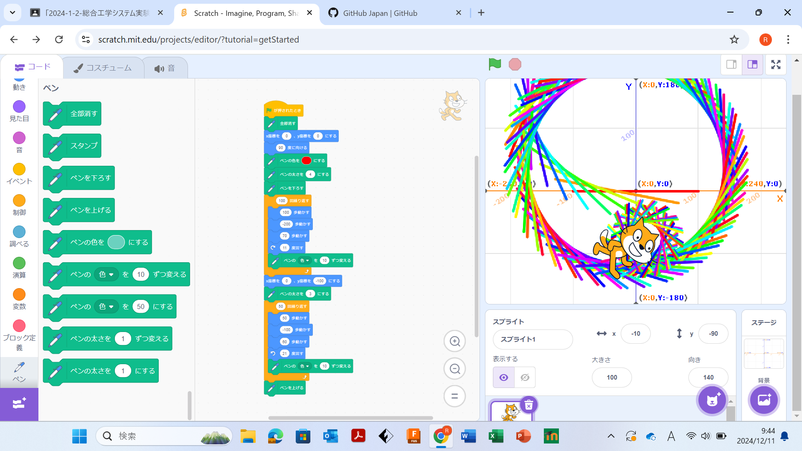
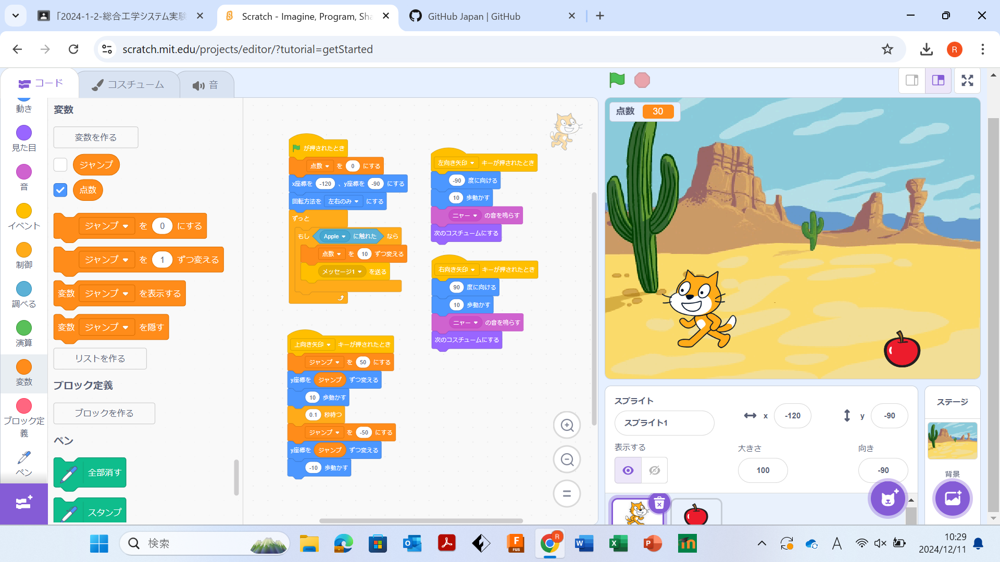

1週目のレポート ： 公大高専１年実習I-1
2b班37番 yanosaku
第1週目
1-1 サイエンスアート

1.内容
スクラッチを使って線を書くプログラムをしました。
2.感想
線を描くという簡単な作業でも頭を使ってプログラミングをしないといけないので思っていたより難しかったです。
1-2 ゲーム

1.内容
スクラッチを使って猫がりんごをキャッチするゲームをプログラミングしました。
2.感想
サイエンスアートの時は猫を回転したり動かせたりして、線を描いただけだったけど、ゲームは猫とりんごを使ったので作業量が多かったです。 りんごをランダムに落とすことと猫を左右に動かすことは簡単だったけど、猫をジャンプさせることがむずかしかったです。 そのほかにも音や点数のつけ方なども分かりました。
1-3 ホームページ作成
私のホームページ
1.内容
Githubを使って自分のホームページを作成しました。
2.感想
ホームページの作り方、編集の仕方、画像ファイルのアップロードの仕方が分かりました。
各ページへのリンク
1週目のレポート
2週目のレポート
3週目のレポート
私のホームページ